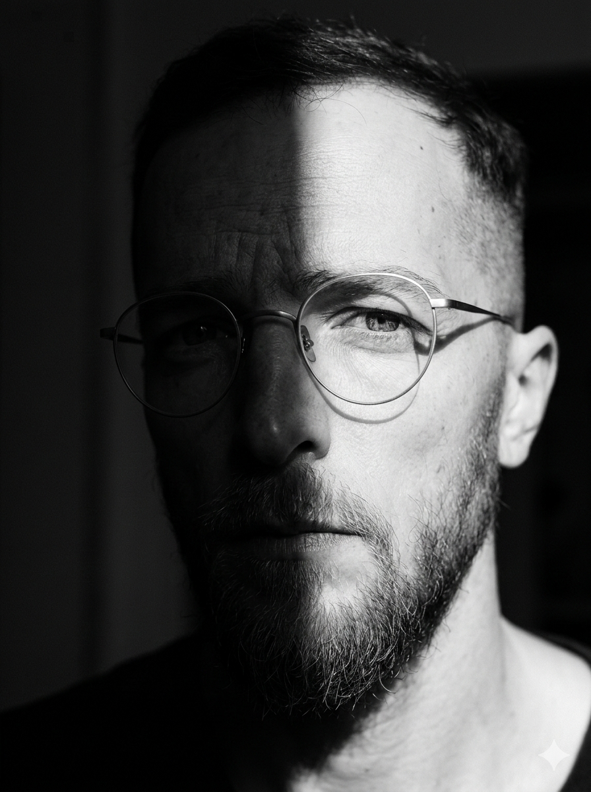

Operations Architect and AI Experience Designer with over 15 years building digital products across fintech, Web3, media, and SaaS. Based in Berlin, I specialise in auditing agentic workflows, remediating AI Experience Debt, and designing the guardrails that turn functional tools into retention engines.
My track record includes leading the evolution of complex products like Podigee and Wealth Management SaaS at FNZ — cutting support escalations by 40% and reducing onboarding drop-off by 25% across enterprise workflows.
I focus on the moments AI-first products fail silently: dead-end loops, hallucination recovery, and the invisible friction that drives users to competitors before they ever file a ticket.
Experience
Senior Product Designer
Podigee · Berlin, GermanyModernizing the product experience for a leading podcast hosting and analytics platform. Leading the evolution of the Podigee design system for scalability, optimizing monetization workflows, and integrating AI-driven content features.
User Experience Designer
FNZ Group · Dublin / RemoteDesigned core wealth management modules for a global SaaS platform. Led the redesign of the electronic identity verification (ID&V) experience, drastically reducing compliance friction and user drop-off across global banking institutions.
UX/UI Designer
scribe / BigchainDB / Ocean Protocol / IPDB · Berlin, GermanyEarly team member for pioneering blockchain and Web3 projects. Simplified decentralized data marketplaces and digital ownership concepts through intuitive UI. Built comprehensive brand guidelines and design systems for multiple scaling organizations.
UX/UI Design Mentor
CareerFoundry · RemoteMentored global students through a career-transition design bootcamp, guiding them in building professional portfolios and transitioning into the design industry.
UX/UI Designer
Jobspotting · Berlin, GermanyIterated on web application interfaces and created the company’s first comprehensive visual style guide and design system for a personalized job search engine.
DTP Manager & Graphic Designer
Various Agencies · Dublin / MadridEarly career foundation in publishing and graphic design. Led DTP and design teams at Messenger Publications, Tek Translations, Eurotext, and ICON Clinical Research.